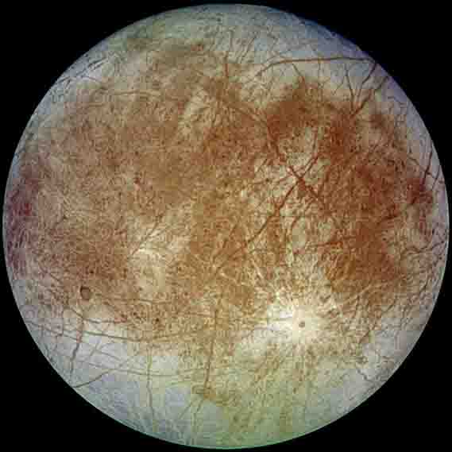

Jupiter
Jupiter's Moons

Europa
Europa is the sixth-closest moon of the planet Jupiter, and the smallest of its four satellites.
- Diameter (km)
- 3,100 km
- Mass (kg)
- 1022 kg
- Orbital period
- 181 days

Callisto
Callisto was discovered in 1610 by Galileo Galilei. It is the third-largest moon in the Solar System
- Diameter (km)
- 4,841 km
- Mass (kg)
- 1023 kg
- Orbital period
- 184 days